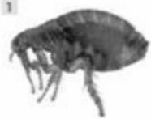
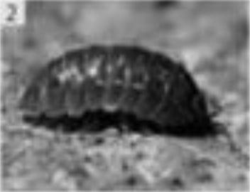
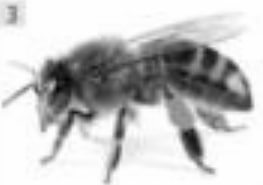
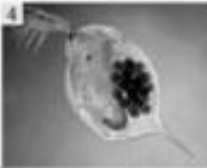

|  |  |  |  |
Блоха |
Мокриця |
Бджола |
Дафнія |
|
Паразитують на тілі звірів, птахів і людини. |
Живуть на суші у вологих та темних місцях. |
Живуть на суші у вуликах, переважно колоніями. |
Мешкають у різноманітних водних середовищах від кислих боліт до прісноводних озер, ставків та річок. |
|
Блохи є дуже адаптивними і можуть пристосовуватися до різних умов для забезпечення свого виживання. |
Деякі види мокриць розвиваються в умовах високої вологості і можуть переносити періоди засухи, шукаючи захист від спеки в тінявистих місцях чи внизу водойм. |
Бджоли здатні до комунікації, та пристосовані до різних природних умов та до ріхких змін клімату |
Дафнії швидко розмножуються, добре фільтрують воду, швидко рухаються(що допомагає їм врятуватись від хижаків), та можуть адаптуватись до зміни солі в воді. |